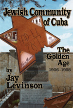

Westview Publishing is pleased to announce the release of Dr. Jay Levinson's new book,
Jewish Community of Cuba: The Golden Years, 1906-1958
Westview Publishing Co., Inc. (2006), 0-9776207-0-0, $24.95In 1906 Manuel Hadida convened a meeting of eleven Jews in his parlor. A relative of his had passed away. The purpose of the gathering was to establish a synagogue and Jewish burial ground for the one hundred or so "Hebrew settlers" in Cuba. At another meeting not long afterwards officers were elected, but in the Fall 1906 the newly elected treasurer also died. From this auspicious beginning, the Cuban Jewish community reached 15,000 or more members at its zenith.
This book traces the history of that community, reconstructing many events which have been forgotten. The island's first rabbi made trips to Santiago de Cuba and Havana from Florida, where he owned an ice cream factory. During World War II kosher meat was slaughtered in Cuba for soldiers in the U.S. Army. Meyer Lansky, known for his underworld activities, applied for membership in a Havana synagogue.
The book also brings new understanding to more well-known history. The refusal of the Cuban government to allow the St. Louis to disembark passengers is examined in light of the flight of Jews from Nazi Europe, particularly to Mandate Palestine, where British immigration policy was changing (unknown to the Cubans). The building of new synagogues on the eve of the Revolution is considered in the context of nouveau riche and the move to suburbia.